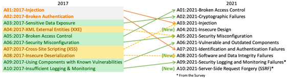

Overview OWASP Top 10
Palestrante: Rogério Fontes / @rogeriofontes
Sobre o palestrante:
APAIXONADO EM MANEIRAS E FORMAS ÁGEIS DE CRIAR CÓDIGO FONTE. PROGRAMANDO SEMPRE TOMANDO UM BOM CAFÉ E ESCUTANDO UM BELO E PESADO ROCK`N ROLL. TRABALHA A MAIS DE 10 ANOS COM JAVA E LINUX, PASSANDO POR ANDROID, PYTHON, PHP E NODE.JS. PROFESSOR UNIVERSITÁRIO DE REDES DE COMPUTADORES, JAVA E DISPOSITIVOS MÓVEIS. JUGLEADER E CO-FUNDADOR DO UAIJUG (GRUPO DE USUÁRIOS JAVA DO TRIÂNGULO MINEIRO) E DO TRIÂNGULO HACKERSPACE. ENGENHEIRO DE MORDENIZAÇÃO - EVERIS/ITAÚ E APAIXONADO POR ESTUDOS MÚSICAIS.


OWASP Top 10
É um guia indispensável para qualquer desenvolvedor que esteja trabalhando em projetos principalmento na Web. Para evitar problemas com exposições indevidas de dados pessoais (LGPD) ou ataques cibernéticos contra seus usuários, é essencial que os desenvolvedores utilizem os recursos da OWASP durante todo o ciclo de desenvolvimento e manutenção de seus projetos, além de realizar auditorias constantes para garantir que seu código esteja em conformidade com novos riscos que surgem diariamente.
OWASP Top 10
A mais recente versão da OWASP Top 10 é a de 2021.
OWASP Top 10 - 2017 versus 2021
Veremos as brechas mais comuns nos projetos:
1) Injeção: falhas de injeção (incluindo SQL, OS e LDAP)
Ocorrem quando um interpretador pode ser manipulado por um atacante para que ele execute comandos maliciosos, culminando na invasão de sistemas e roubo de dados pessoais em um banco de dados;
2) Quebra de Autenticação:
Problemas na implementação correta de recursos de autenticação podem ser explorados por criminosos para comprometer credenciais e tokens, obtendo acesso não autorizado a sistemas privados;
3) Exposição de Dados Sensíveis:
APIs mal configuradas ou servidores públicos podem acabar expondo dados pessoalmente identificáveis, algo gravíssimo especialmente em tempos de Lei Geral de Proteção de Dados (LGPD).
Esses exemplos são apenas o os tres mais comuns do OWASP Top 10. Mas temos os outros para chegar nos 10.
Vale observar que o OWASP Top 10 não se limita a listar vulnerabilidades importantes, mas também oferece uma série de dicas e truques para que você evite esse tipo de problema em seus projetos, explicando as melhores práticas para que um projeto web se torne livre desses bugs.
A01: 2021- Broken Access Control (Quebra de Controle de acesso)
O controle de acesso impõe a política de forma que os usuários não possam agir fora de suas
permissões pretendidas. As falhas geralmente levam à divulgação, modificação ou destruição
de informações não autorizadas de todos os dados ou à execução de uma função comercial fora
dos limites do usuário.
A02: 2021-Cryptographic Failures (Falhas criptográficas)
Muitos aplicativos da Web e APIs não protegem adequadamente os dados confidenciais com
criptografia forte. Os invasores podem roubar ou modificar esses dados pouco protegidos para
conduzir fraudes de cartão de crédito, roubo de identidade ou outros crimes. Os dados
confidenciais devem ser criptografados em repouso e em trânsito, usando um algoritmo de
criptografia moderno (e configurado corretamente).
A03: 2021- Injection (Injeção)
Falhas de injeção, como injeção de SQL, NoSQL, SO e LDAP, ocorrem quando dados não
confiáveis são enviados a um interpretador como parte de um comando ou consulta. Os dados
hostis do invasor podem induzir o intérprete a executar comandos não intencionais ou acessar
dados sem a devida autorização.
A04: 2021- Insecure Design (Design inseguro)
As atividades de pré-codificação são críticas para o projeto de software seguro. A fase de
design do seu ciclo de vida de desenvolvimento deve reunir requisitos de segurança e ameaças
de modelo, e o tempo de desenvolvimento deve ser orçado para permitir que esses requisitos
sejam atendidos. À medida que o software muda, sua equipe deve testar suposições e condições
para fluxos esperados e de falha, garantindo que eles ainda sejam precisos e desejáveis.
Deixar de fazer isso deixará escapar informações críticas para os invasores e deixará de
antecipar novos vetores de ataque.
A05: 2021- Security Misconfiguration (Configuração incorreta de segurança)
Seu software é tão seguro quanto você o configura. O uso de padrões de configuração ad hoc
pode fazer com que contas padrão sejam deixadas no lugar, armazenamento em nuvem aberto,
cabeçalhos HTTP mal configurados e mensagens de erro detalhadas contendo informações
confidenciais. Não apenas todos os sistemas operacionais, estruturas, bibliotecas e
aplicativos devem ser configurados com segurança, mas também devem ser
corrigidos/atualizados em tempo hábil.
A06: 2021- Vulnerable and Outdated Components (Componentes vulneráveis e desatualizados)
Componentes, como bibliotecas, estruturas e outros módulos de software, são executados com
os mesmos privilégios do aplicativo. Se um componente vulnerável for explorado, esse ataque
pode facilitar a perda grave de dados ou o controle do servidor. Aplicativos e APIs que usam
componentes com vulnerabilidades conhecidas podem prejudicar as defesas de aplicativos e
permitir vários ataques e impactos.
A07: 2021- Identification and Authentication Failures (Quebra de identificação e autenticação)
As funções do aplicativo relacionadas à autenticação e gerenciamento de sessão são
frequentemente implementadas incorretamente, permitindo que invasores comprometam senhas,
chaves ou tokens de sessão ou explorem outras falhas de implementação para assumir a
identidade de outros usuários temporária ou permanentemente.
A08: 2021- Software and Data Integrity Failures (Falhas de software e integridade de dados)
As falhas de integridade de software e dados estão relacionadas a código e infraestrutura que não protegem contra violações de integridade. Um exemplo disso é quando um aplicativo depende de plugins, bibliotecas ou módulos de fontes não confiáveis, repositórios e redes de entrega de conteúdo (CDNs). Um pipeline de implantação inseguro pode apresentar o potencial de acesso não autorizado, código malicioso ou comprometimento do sistema. Por fim, muitos aplicativos agora incluem a funcionalidade de atualização automática, em que as atualizações são baixadas sem verificação de integridade suficiente e aplicadas ao aplicativo anteriormente confiável. Os invasores podem fazer upload de suas próprias atualizações para serem distribuídas e executadas em todas as instalações.
A09: 2021 – Security Logging and Monitoring Failures (Falhas de registro e monitoramento de segurança:)
O registro e o monitoramento insuficientes, juntamente com a integração ausente ou ineficaz
com a resposta a incidentes, permite que os invasores ataquem ainda mais os sistemas,
mantenham a persistência, mudem para mais sistemas e adulterem, extraiam ou destruam dados.
A maioria dos estudos de violação mostra que o tempo para detectar uma violação é superior a
200 dias, normalmente detectado por partes externas em vez de processos internos ou
monitoramento.
A10: 2021. Server-Side Request Forgery (Server-Side Request Forgery)
As falhas de falsificação de solicitação do lado do servidor (SSRF) ocorrem sempre que um
aplicativo da Web busca um recurso remoto sem validar a URL fornecida pelo usuário. Ele
permite que um invasor force o aplicativo a enviar uma solicitação criada para um destino
inesperado, mesmo quando protegido por um firewall, VPN ou outro tipo de lista de controle
de acesso à rede (ACL).

https://www.hacksplaining.com/owasp